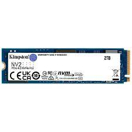

Son dispositivos de almacenamiento mecánicos secuenciales. Están compuestos por discos y púas magnéticas. Los datos se escriben en los discos magnéticamente y eso permite que permanezcan guardados
Es la versión más moderna de los discos rígidos, pero con marcadas diferencias. Se conectan de igual forma, por medio de los conectores SATA, tanto a la placa madre como a la fuente de alimentación.
Son los dispositivos más modernos, son compactos, livianos y ultra rápidos. Su tecnología de conectividad es nueva, es una versión de los PCIe. Por eso llega a las velocidades ultra altas de transferencia de datos
